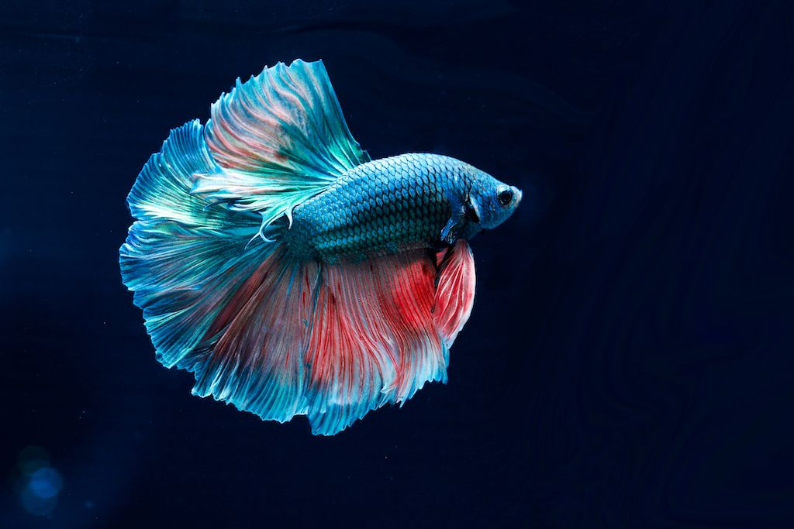

Elam on Kanye West and Anti-semitism

Kanye is being censored right now for saying antisemetic things. He mentioned in his interview with Lex Fridman that he was hospitalized and diagnosed bipolar and he's off his meds. I can relate to Kanye in that way, but I also acknowledge the major success Kanye has attained that I never did. Kanye's delusions of grandeur are unique because he actually can factually back up things like, "I'm the greatest artist of all time". He really DID marry the hottest chick (Kim Kardashian), and he really did make more money than any other black person. He really is an amazing musician and fashion designer so it's complex to analyze his current state of what I think is psychosis.
Psychosis is usually based on something real, and Kanye and I both have religious ideas that influence our opinions and behavior. Kanye's always been a little out there, but now he's really getting hit hard by the media and getting dropped from Adidas specifically because of his antisemetic remarks.
I want to speak on those remarks because Bobby Fischer also got in trouble with those remarks and he was a hero of mine. Right now there is a Fischer Random Chess Championship going on thanks to the genius of Bobby Fischer to propose randomizing the starting position of chess to bypass opening theory.
Here is the deal on antisemitism:
The Jewish faith, if you really look into it, does believe that the Jews are God's chosen people, and that non-jews are less than human, and they are like beasts and meant to serve the jews. They have a word "Goyim" to refer to non-jewish people as cattle or vermin.
This does not mean your jewish friend or neighbor thinks of you as less than human. They probably don't even believe in God. But the deep down truth about the Jewish religion is that it believes it is superior and that non-jews should be enslaved to serve the jews.
This is a disturbing fact of that religion. Just like it's disturbing for Christians to believe the Jews are going to burn in hell for not accepting Jesus Christ as the Son of God who died for our sins. Religions are disturbing.
Kanye West is in trouble for calling the media "Jewish Media" but my question is what if they were jewish? Would it be okay to call a spade a spade? For example, if every media outlet was owned by 6 companies (which they are) and all 6 companies were ran by a black person would it be okay to call them "Black Media" or would that be a problem too?
If you understand what orthodox Jews actually believe and examine the stereotypes you realize that this is potentially an organization of people religiously devoted to controlling the money and the information the "Goyim" or non-jews (you and me) receive in order to orchestrate society in a way where we work for them and not the other way around, nor a peaceful collaboration. There is a group of real people who are Jewish whose goal is to enslave non-jewish people and they have been incredibly successful because they loan out money with interest and live off of the interest and have successfully rigged our financial world into creating a lopsised society where we are forced to work our time for money and still end up in debt.
The bankers have the US Government by the balls because we can't even afford to pay back the interest on our loans let alone the loans themselves. Are they "Jewish bankers" as Kanye would probably say, or are they just bankers? Wouldn't it make sense for a group of people who believed it was God's will for them to enslave the rest of humanity to occupy these positions of power? If there really is a religious group of people devoted to dominating the world they would eventaully rise to the top of the banking industry as a means to an end. Remember, their moral code allows them to lie, cheat, and steal their way to the top as long as it's done to non-jews.
Meanwhile this potentially Jewish organization has systematically controlled the press to silence and disgrace anyone who tries to challenge or speak on their agenda. Even I writing this can become a target or be yelled at by my own family simply for trying to uncover what Kanye West is really trying to say and why.
I don't think Ye is handling it perfectly or saying the right things, and I do think he's a little off his rocker right now, but I'm just saying it's possibly based on the truth and he does have real experience with this system of control that you can call the Illuminati. See, as a conspiracy theorist I always wondered why no famous people ever watched a 9/11 video and then came out in support of the truth movement. But some of them do, and they are silenced or defamed.
I don't hate anyone for being Jewish, and Lex Fridman is an example of a Jew I like, who interviewed Kanye and tried to get him to stop saying his anti-semetic statements. I side with Lex on this, but I'm just saying that there actually exists a real possibility that a Jewish group of people has the rest of the world by the balls and prefers it that way, and it will only get worse.
The world makes more sense when you see it as an effort to consolidate power into a small group of like-minded people who want to enslave everyone else. If that small group succeeded, wouldn't it make sense for them to share a religion? You have to ask yourself which religion is most likely to fit that type of a group. The answer is the Jewish synagogue of Satan. My local ventura county's sheriff's deptartment's symbol is the shape of a Jewish Star, showing me who's in control. Here's a great video analyzing the true meaning of the so-called "Star of David": It's 666 because it's 6 points, 6 mini-triangles, and a 6 sided polygon. You got to admit it's pretty suspicious and convenient for the conspiracy buff. The Star has no biblical reference and can't even be found in the Torah.
Look at what Covid did. It gathered wealth into fewer people's hands and crushed small businesses and the middle class. Look at 9/11 and how much support Israel has gotten from the fallout. Look at the Patriot act and how much power the government is gaining over it's people. The steady pattern is that the average man is getting more and more fucked over. Things are not getting better they are getting worse and more expensive. Rent and gas goes up faster than wages. College ends up being largely a scam.
If Bobby Fischer, one of the most demonstratably smartest men ever, comes to the conclusion that Jewish people are the problem, I think it's worth investigating, and that's where my knowledge comes from. Just having an open mind about what Bobby was trying to say, or what Kanye West has to say. I love the chess games of Bobby, so I give him the benefit of the doubt. Similarly, I love the music of early Kanye West, so I believe he's earned my respect enough to take his claims seriously.
Even though you and I probably would like to create a world where we collaborate and both have equal rights and stuff, there is a very real force in this world of people who are trying to make it more like a slave-master type deal. True Jewish believers have little choice but to accept themselves as superior, and to treat non-jews as less than human. One option a Jew has is to disagree with that assertion, and to treat all people equally. I want all Jews to have the right to do that, and to either drop their religion, switch to Christianity, or just practice their religion in peace. But what I have a problem with is the idea of the Jewish faith uniting people who wish to systematically enslave non-jews.
They justify it by saying we act like animals. They feed us the porn and movies and music and then because we consume they call us beasts and justify their enslavement of us through money. They see themselves as the chosen people of God because they can control themselves and act with dignity. But conspiring against your fellow man is evil and from the Devil.
If there really was a group of people trying their hardest to enlave you would you want them to be stopped? What if they took control of media outlets and controlled your information in a way that would serve them and hurt you? What if they rigged elections or the financial system? Would you want them to go to jail? Would you want justice to be served? What if they were Jewish? Would it be okay then? Should we respect the Jewish goal of world domination because it should be protected as freedom of religion?
I'm a chess player, and I can always see history or life as a game where one group of people is using tactics and strategies to put themselves into power and to stay in power. That's why my favorite book is 1984, because it shows beautifully how power can reach a breakaway point where it's impossible to beat, and people are born into slavery and manipulated to the point of loving it.
This is the only life we got from God, and I think it's beautiful and I'm thankful for it. I love all the people, even the Jews who believe that I'm "Goyim" and less than human. I forgive them all. I know that Jesus is the king and this life is just a small test compared to eternity with Christ. I'm thankful for this challenge. But I also understand that this is a rigged game and our information is manipulated and we are under attack from an evil Cabaal I'll call the Illuminati. And I also know the Jewish religion fits right into that Cabaal. I know that Christianity does not fit into that power structure. Atheism, is one way to go, but then you're just subjected to groups with stronger control over you than you realize.
I'm going to leave you with a Kanye West song, and you can see in the lyrics he's been saying the same thing for a long time. It's just that he finally said the magic word "Jew" and now the media is demonizing him. It's not our fault that the Jewish religion believes they are the chosen people and logically fits into the group of people that is obviously enlaving us and feeding us false information.
It makes me happy when a celebrity speaks out about the truth because it lets me know that these are real people and some of them get kicked out of the club when they try to help spread the truth. I'm with Lex though, I don't want to spread hate speech or incite violence, I want to be careful with my words. I'm just sharing with you my concern with the Jewish belief system based on my research of the Illuminati and world domination.
Not all Jews are bad, but if some of them actually believe they are God's chosen people, and that non-jews are less than human and should be enslaved to the Jews, isn't that worth sounding the alarm for? If a subset of Christianity believed "God hates Fags" and commited violence against gay people I would demonize them and it would be okay to raise the alarm against those Crazy Christians! I would even go as far as to say they aren't real Christians. Maybe the Jews I'm talking about aren't real Jews, and a real Jew can help clear this up and explain to me the word "Goyim" and whether or not they think non-jews are less than human.
Extremist religious groups that cause harm to other groups for not being their religion need to be exposed and stopped, and I think there is likely a subset of the Jewish religion and freemasonry that is too extreme and needs to be exposed and to face justice. I don't think you can walk into your local temple and hear talks of world domination; I think you'd need to rise through the ranks of freemasonry to hear that. But I don't think this world is capable of holding them accountable. Only Jesus can do that. Obviously me and this website aren't enough to stop the Illuminati plans of world domination well underway, but hopefully I can guide a few souls to salvation along the way. God Bless. Elam out.
10.25.22
Challenge Accepted Girl tries Chess
Great video showing a girl trying to his 1000 ELO on chess.com. I think it shows how difficult chess really is and how emotional one can get when they reach their milestone. I just hit 2100 and had similar emotions to her. Chess can be a love/hate thing but it's mostly love.
10.24.22
Gothic Chess Variant
Awesome chess variant with two new pieces based on Capablanca Chess. The Archbishop (bishop + knight) and the Chancellor (rook + knight).
Just like how the Queen has the abilities of the bishop and the rook combined, the Archbishop and Chancellor do that with both having the abilities of the knight, and the rook or the bishop. The Archbishop is my favorite piece and definitely fits right in on the 10x8 chessboard.
These new pieces create new tactics and dynamics and are extremely fun to use and calculate with. In my video I made a nice checkmate combining the Archbishop with the Rook. Try it on chess.com!
10.23.22
Good Conspiracy Video and Great New Show

My new roommate came in talking about conspiracies. I'm like, "Do you know who you're talking to?"
It's nice to be able to agree with someone about how reality works.
He recommended I watch this video and I watched it with him and thought it was good.
Also I want to recommend the new Amazon show "The Peripheral". I love it.
10.23.22
$100 Million Dollar Lawsuit
Hans Niemann has sued the world champion of chess Magnus Carlsen after Carlsen accused Hans of cheating without proof after his loss against Niemann in the Sinquefield Cup.
I made a video tonight about the lawsuit, and about my love of chess and some chess history. Enjoy!
10.20.22
Integrating the Shadow
This is so true in my life right now. I need to actually quantify myself in the real world and stop fanticizing my existence. I have to participate in reality with a real job instead of imagining myself as someone more important.
10.20.22

h4-h5!
Incredible game by Shaq. I've won a couple games like this recently with the h4-h5 attacking idea but this is next level. I made a video on one.
Here are my games with the h4 attack.
Here's another one.
It's dangerous to attack like this because often you have to castle queenside into danger or keep your king in the middle. You also have to sacrifice material and time sometimes so you're attack better work or you're usually lost on the queenside.
The h4-h5 attacking theme has been repopularized by the way Alpha Zero played chess and beat the best Stockfish at the time. Alpha Zero used deep learning and neural networks and self-play to play more creatively then the best brute force calculation computers could handle. Now I believe Stockfish has learned how to use a neural net but I'm not sure. There is Leela Chess Zero which is an open source neural network chess engine and Alpha Zero is retired.
You'll notice I ended both games in style with a royal fork and them resigning, but it's really all about going after the king and trying to checkmate and that's what makes them blunder their queen. These attacks are so successful even if Black plays perfectly from before the move they blunder their queen they still have a losing position. The attacks are sound. Shaq's was otherworldly though with an amazing rook knight bishop and queen sacrifice.
10.14.22
2100!!!!
This is the final position before my opponent resigned after blundering his bishop.

I finally reached a new rating milestone of 2100 on lichess.org for rapid time control (10 minutes each)!
I've been battling with some really good players above 2150 and sometimes I would have a winning position but lose on time. I also had a draw that kept me near 2100 and then I finally won a game to put me over the top. I had been losing, winning, losing, winning, drawing, but I finally did it with a win, draw, win.
I am so happy and I'm not sure I'll touch my rapid account for a while. I'll probably switch over to classical to try to get that to 2100 but honestly it's not a serious goal of mine I think I might just play for fun and take a break from reaching milestones. It was SO difficult and I learned so much about the nuances of the game to be able to beat these players consistently enough to reach 2100.
And it's Friday! God bless. I am seriously so happy I can forever say I'm 2100. It was getting annoying saying I'm 2000 because I was really 2080 for a long time but now I can finally say I'm 2100. 2500 is a grandmaster and there's also things like Candidate Master and Internnational master. and FM but I forget what that stands for.
I am definitely ready to enter tournaments and try to get a real FIDE rating going. I should also probably start focusing on my chess.com ratings and get them all to at least 1800.

p.s. this is an achievement only I can truly understand and appreciate. I will tell my friends but it's hard for them to quantify how great a 2100 chess player is. I'm happy and proud of myself. I'm even considering taking a break from competitive chess online because I don't want to keep getting stuck and chasing a new rating milestone. This is so huge for me and I've been trying all year and part of me thought it was just never going to happen with the way 2100s play chess. But finally I started to get good enough to wear they were the ones blundering away quick games and resigning. And I had some clutch comebacks and checkmates with 2 seconds left.
I'm going to enjoy this for the weekend and celebrate with my friend and then take a break from playing chess and just follow the US Championship! Codejoy out.
10.14.22
All time high
Almost 2100! 2093 after this game against my highest rated opponent I've ever beaten.
Great attacking game that was actually sound.
A lot of times I have a great attacking game that works but the computer in the postgame analysis finds ways to defend, but in this game it was winning the whole time!
Only a couple wins away from my goal of 2100!
10.13.22
More Midjourney AI generated images from text

A pet dragon breathing blue fire
The Vengeance of God
Gold Devil
Rainbow Angel
10.5.22
Wrong Side of the Sea
I wrote and recorded a new song tonight. It's missing a bridge as usual because I don't know how to write a good bridge. It doesn't come naturally to me. I think it gets a little repetitive at the end but I like the beginning and the sound and poetry of the lyrics.
10.4.22
FullStack Web Developer
I've interviewed at Google, Meta, and Amazon for web developer roles. I've decided after some time off learning new things that I'm not giving up on my dream. I quit my insurance job and I'm living in sober living. I'm going to use this time to learn new skills like fullstack web development and improve on my algorithms so I can built cool apps and do better on my next interview. I went to a coding bootcamp for fullstack web dev but the fullstack stuff didn't stick with me. I really only internalized what I've used this website for which is basic HTML, CSS, and JS without any server-side code. My website doesn't have a backend to store things such as user comments or likes. It's amazing to me how complex it is to do and I've just never found a framework I like. The closest I got was with Django making a facebook clone and a fantasy football app but that used python instead of javascript and js is the one that stuck with me. Maybe I will move back to python and use Django because I was just trying to learn Node.js and it was kind of like a nightmare and I don't remember Django being THAT bad.
Still, for a blog it's not necessary to have a backend but I know I'm missing key skills for the job market by not knowing how to do backend stuff. It's frustrating to have to learn 2 languages in js and python but I don't like how js does the backend so I might have to get back into python. Django is so cumbersome I wish it was simpler to do simple things and I don't like downloading a bunch of packages I don't understand when I'm trying to built my site from scratch with what I truly know so I can intuitively know how to modify it. That being said my current project has plateaued and I really need to start building fullstack web applications to progress with my skills. It's a pain in the ass to learn new things especially when I'm not getting paid and may never break through to the industry and use my skills I painstakingly develop. But I think all I can do right now is improve day by day and maybe spend an hour or two learning new things and then seeing what I can accomplish and what new web apps I can design and build. I'm back on the coding wagon. Wish me luck! And you know what? I'm proud of myself for trying to learn node.js today because although it didn't all work or make sense to me I definitely understand the backend a little better now that I tried it. The artwork above is from AI and somebody else. I ran out of attempts with midjourney's AI image generator from text. I plan on generating some more this week with my friend. God Bless.
10.3.22
Cloudland, The Game
I want to design a game called Cloudland about a Dragonslayer named Elam who slays the dragon Ecnarelot. I've already written the story and written some chronicles
It's tough to design games because it takes up space on my computer and is hard work to do alone. It would be nice to get a team together. If I had the money I would hire an artist and a programmer to make the game fun. I could do it myself but sometimes I get discouraged spending so much time and effort developing a game.
My first game I made was Starbros and I still like that game but I definitely would love to create the game Cloudland. But if I download Unity I don't have space to record my chess videos. It's almost like I need a new computer. My battery is not good anymore and the keys are getting stuck on my keyboard. I would like to see how good of a game I can make and then eventually have my own game studio called Godlike Games or Jann Software. I would also be down to work for a game company until I can make my own.
I quit my job in insurance and want to follow my passions of writing, music, art, chess, and video game development. My blog can be a little wacky but I have bipolar disorder and I'm on medication now and I'm still proud of this website and blog even though it can be a little embarrassing when I look at what I wrote a year ago.
In Conclusion, I really like this Stan Lee clip about not letting idiots talk you out of what you truly believe is a good idea. My idea is Elam slaying Dragons in Cloudland, and I intend to make a game out of it one day. God Bless.
10.01.22
Beta Fish in a big pond
10.27.21
I just finally programmed it so that anyone who types in maxjann.com/blog will be redirected to maxjann.com / the current month
This is pretty sweet as it's difficult to load everything but I want people to be able to use /blog and get the latest stuff.
I did 100 Pushups today again, with my routine of 20 before work, 20 on my 2 ten minute breaks, 20 at lunch, and 20 when I get home. I also went to the gym and got 6 pull ups in and worked the machines. I can only do 4 pullups right now which is embarrassing but at least I'm making progress. I could only do like 1 when I started going to the gym at my new place.
I still need to get a scale but I'm eating and drinking better and making healthier choices. Today I realized I hate getting ready for the gym. I hate putting on my shorts and shoes. So i just went to the gym in my pants and slides, all comfortable. It's dumb to drop weights on my toes but I didn't use any weights. I just used machines and the pull up bar.
I learned from the book Atomic Habits that you can't make something a habit unless you enjoy it. By remaining comfortable during my workout, at least I can get in some reps and have a positive experience so I'll be more likely to go back again.
I really like that song I just posted in this. I hope you like it too. It's called Loverboy by A Wall. I hope I can turn my life around, get the results I want and point back at my journey in this blog.
I gotta stop being such a beta male. I want to be Alpha. I think I'm naturally alpha, but I've let myself get too emotional. I dig my own music but I definitely would like to develop a more masculine sound and lyrical diction.
It's also possible I was only alpha in a small pond of highschool, but I definitely haven't been one in the larger pond of real life yet.
Not sure why they call Beta Fishes beta. Those things are awesome.
Super Saiyan Max

I did 100 pushups today.
I've been trying so hard to motivate myself to get better habits so I can get a better life.
I listened to the full audiobook of "Atomic Habits" by James Clear, a philosopher my Mom recommended. It's about how tiny consistent changes have a compounding effect that can produce profound results. I've also been looking into my free time away from work and sleep and how I spend it. I have about 7 hours of free time on a work day. I need to spend 1 hour of it on exercise to reach my potential.
Last night I went out to dinner with a girl I met on Tinder. We had a nice night but she didn't even want to hold hands.
The whole experience of trying to get laid made me realize.. there is no good shortcut. The best way is to find a girl you really like who you're willing to wait for until she's comfortable. And it doesn't feel like work or waiting because you enjoy every second of it because you really like her. -- I did it right the first time, but once you're an adult and have already had sex many times, it's harder to be patient with girls you just met, and I've lost sight on the right way to go about it.
My problem is the girls I really like do not like me too. That's because I desire very high quality women and they have their choice and will pick guys who work harder than me, look better, and probably make more money.
I'm left with no choice but to get in kickass shape and see if that helps my chances with the girls I really want to go after. But I've been meaning to get in shape for a while and it still isn't happening but finally today I reached a breaking point.
I went to bed early after my unsuccessful date and then I woke up early this morning and unfortunately decided to watch porn and wank it... twice. Then I felt like a total loser but I thought, you know what? I can still turn this day around. I got out of bed and did 20 pushups to restart my day.
Then, I went to work and on my first 10 minute break I went outside and did another 20 pushups. I may not have my life together enough to have a gym/breakfast morning routine but at least I can work out on my breaks outside. Another 20 pushups no big deal.
Then on my lunch break I did another 20 pushups making 60 total. I realized if I did another 20 on my last 10 minute break, and 20 at home at night, that would be 100 total and a good daily milestone.
Stupidly I ordered for lunch a Giant Philly Cheesesteak sandwich from Jersey Mikes with Chipotle Sauce and At like 1 and a little of the second half of it.
I felt terrible but I still got my 20 pushups in my last break making 80. Then I had a really bad stomach ache and I promised myself I'd start eating smarter for both my physical health and my mental health.

When I got home I watched little miss sunshine and did another 20 pushups and I ordered groceries to my house with fruits and vegetables and I'm considering just skipping lunch at work from now on because it will prevent me from wasting money ordering unhealthy food and I can lose weight by fasting. Ideally I could have a good breakfast and good dinner and skip lunch, maybe have a healthy snack idk.
Little Miss Sunshine is about flawed characters coming together for a common good and accepting themselves. It's about how the journey is more important then the destination. It's about how winning isn't everything. It's how you play. It's about being yourself and it's about having fun when things don't go your way. It's about protecting the innocence of a child and it's also about not having the answers to the child's questions, and life's big questions. No one knows. We do the best we can. All we can do is try. And there's more to life than winning. But I'm certainly going to try to win by my own metrics. If I can at least be the best version of myself I know I can be, at that point, no one else's opinion matters. I am my own worst critic.
I also got 10 curls in and today feels like a success.
I really want to eat healthier, to save more money, and to become a better looking man so I can get better looking women.
Sometimes I think positively about where I was 1 year ago. 1 year ago my coding skills were rotting away atropheying ( is that a word? ) and I was living with an old grouchy woman who policed how I did laundry and was very annoying.
My living situation has improved, my salary has improved, my social life has improved, (I'm actually going on dates pretty consistently lately). My guitar skills and chess skills have improved, my website is vastly improved.
I don't know if there's any metric by which my life has not improved over the past year, so although it feels sometimes like I'm an idiot bumbling around in the dark, I am moving in the right direction and picking up speed.
I still have a lot to learn about life but I'm grateful for my life and all the room I have for improvement.
I don't miss facebook. I just like putting my thoughts out there like this. This would be a weird AF facebook post, but on my personal website it fits right into my wacky thoughts.
08/20/2021
Coding for $
I just made the start of a homepage for an ecommerce website to help my friend sell CBD Gummies. I also have been making updates to my fantasy football webpage for my league, pro bono
10/13/21
Something left to give

That's the new bond girl.
I went to the Chargers Browns game today and I saw James Bond tonight.
I'm beginning to wonder what's the point of this blog. It used to be I thought I had something to say, something to teach. But now I feel like I've been so bad at getting what I want that why should anyone listen to me? Not only that, but what if I'm wrong about Jesus and God or conspiracy theories? Then what would this blog be?
I had to get a negative test for covid within 72 hours of entering sofi stadium because I'm unvaccinated. This added stress but it was worth it. I got to see the Browns and Chagers put up 90 points.
When you are behind your computer screen and not out in the real world, it sounds worse than it actually is. I was able to see the game with my dad and have fun even though I'm unvaccinated. It was quite the inconveniece to get tested within the time frame given my insurance but at least it was possible.
If you read the official rules of Sofi stadium they say you have to wear the mask at all times when not eating or drinking, but really once you get in the front door everyone takes their masks off. Life is good for a lot of people out there. They are blissfully unaware of any incumberance on their life. I dig that. Because their radar doesn't even go off unless they're being actively restricted from having fun, whereas my radar is constantly going off.
So it's not that big of deal. The world is still free. No bombs went off or anything crazy, and I got to see my favorite team play. Then I got to see James Bond. And James Bond wasn't feminist propaganda like some trolls might suggest. It was a great movie. Maybe these events people go to really are just artists trying their best to entertain or venues trying their best to be safe. Maybe God is made up and Jesus isn't the Son of God. But.
But, there was this one thing. In the plot of the Bond Movie, the villain is using DNA identifying nano-bot precision poisoning to kill certain people without collateral damage. He kind of has a kill switch on certain targets via nanobots and poison.

My conspiracy alarms started going off. If they put the idea of nanobots going into your blood and manipulating your DNA or communicating your DNA to a center that can then target you, if they put that in a movie everybody laps it up like "oh yes that makes sense I get that. Seems believeable" Wilful suspension of disbelief. But then if a conspiracy theorist says the vaccine has nano-technology in it that's potentially dangerous or in the hands of the wrong people then that's somehow insane or crazy.
The way it works in the bond movie is that once they have your DNA, they can kill you with a toxin that only targets your DNA group specifically. So if you're in a party and they spray the air, only you and your family dies.
This made me think... They don't have my DNA. They don't have nanobots in me most likely. By abstaining from the vaccine I'm not giving them that chance or power over me. However, in the Bond movie, the premise is, it's enough to have the nanobots in my dad or mom. My dad and mom both got vaccinated. So with this bond theory applied to reality then that means that my DNA might as well be targeted if necessary because the bots in my mom and dad can give the recipe for the dust that will kill me and only me and my family whenever they want to. It sounds ridiculous I know, but think of the national security benefits to having a killswitch on everyone by virtue of mass vaccination. Every conspiracy theorist is going to have at least one family member gullible enough to get vaccinated. They have the killswitch on everyone.
Imagine a Car chase where a bad guy has a hostage. The cops throw in a special gas in the car. The gas kills the bad guy because he has a certain DNA it's designed to kill. And the hostage gets away unharmed.
Or you could spray the air and kill everyone except the people with their DNA on the exempt list. You could accomplish mass genocide with this bond villain technology. Now is that a genuine theory from a real writer just trying to entertain us? Or is that a real illuminati plot to take over the world and we are just allowed to glimpse it for whatever reason? Is it a coincidence that the vaccinations are MRNA and the bond villain stuff is doing kind of a similar thing? Is the writer trying to tell us something?
Anyway, I trip about girls sometimes but I just saw a full stadium of them and they're all gorgeous. I'm sure I'll find one for me again eventually.
10/11/21
Hilarious
Absolutely hilarious color commentary of an amateur chess game, but maybe it's only funny for chess experts lol.
10/08/2021
Humble Pie
I was listening to Christopher Hitchens today and he said religion is like a death cult, because in order to believe it you have to long for death, and subscribe to the idea of an apocalypse. You have to consider all human progress as something to be discarded and started over.
He also pointed out that religions can satisfy the human need for obedience and slavery, essentially. In light of a cosmic God one can only be a cosmic serf of sorts.
In my own personal experiennce I was at my most happiest when I wasn't particularly religious nor was I philosophical. I was 20 and happy with the world and my place in it. I didn't long for it to be over and to be placed in some sort of heaven. And I didn't long to be told what to do by cosmic laws either. I was content with making my own judgements and decisions. And of course, church was always seen as a drag.
Neil Degrasse Tyson also said today to me in that same video, "The Universe is knowable". Do not try to ascribe what you don't understand to the mystical or magical.
Recently I was watching a QOC video where he points out how impossibly fast Google's search results are, and he did have some excellent points, however, he had a basic misunderstanding of how search engines work. He thought it was searching the whole web in less than a second and returning results. In reality, I think it works more like a search engine working around the clock and organizing everything so that when you type in a search it just filters the list it already possesses. It doesn't start from scratch. It just goes to the section of it's library that you need.
I don't want to point at things I don't understand and make foolish claims about it. I'm not taking magic off of the table either.
Matt from Quantum of Conscience has stopped researching thoroughly. As he points out, you never get anywhere or convince anyone, so it must be pointless. He says it (reality itself) will give you what it wants you to chase. You certainly end up in a pointless loop. So it's not worth investigating what kind of poop it is if you know it's poop. Just stay away. You don't have to do a chemical analysis.
But it's got me thinking. I'm disappointed in believing in God. I'm disappointed in myself.
I went to West Hollywood and had a birthday dinner with some friends and we went out to the bar and there were a lot of pretty girls and I talked to a lot of them.
I came home empty handed. The best interaction I had was with the prettiest girl there. She had a boyfriend who came in with her but I told her when she was alone that she was the prettiest girl there. She really was a stunner. She believed me and was nice to me. Later I went back to talk to her again and officially ask her on a date but she said she couldn't because of the bf. I then asked for her advice on what I can improve on so I can get a girl like her. She asked me to hold her drink and then unbuttoned my shirt. I had it buttoned up because I had no undershirt because I had gotten it wet earlier when I got out of the jacuzzi. She said to stay authentic and try again. There was nothing she could really tell me. I already know the answer. It's just hard work I am having trouble getting myself to do.
Another girl told me to be persistent, which I thought was interesting.
The trouble with cocaine is you think you're a success when you're on it, and you feel like a failure coming down.
The trouble with porn is you are experiencing what it's like to be with a woman, while at the same time distancing yourself from getting a real woman.
Drugs and shortcuts don't work. There's no easy way to get anything worthwhile. Is that God? Is that Evolution?
Should I curse existence for dangling things in front of me that I cannot currently have, or may never have? Or should I thank God for giving me something I desire and can work toward achieving. Would it be easier if all girls were hot and horny and thought I was dead sexy? Or is it the perfect balance?
It's such a fundamental desire, that it's very hard to not consider myself a failure, turning 30, single and alone. On the other hand, I'm glad I'm single, and only want to spend my time on high-quality women. Extremely high-quality woman. I really only had eyes on that one girl, and I'm not really capable of giving it my all with a consolation girl.
On the bright side, at least I'm still young enough to turn things around. I also do not lack the confidence to approach and try to get a girl like that. I am unsuccessful, but at least I have the ability to succeed.

When I see an internship for Insomniac Games which made Spiderman and Ratchet and Clank, I read the job requirements and realize I'm not qualified. It really stinks. It requires C++ or a math or physics major or computer science major. I know C# and have a coding bootcamp certificate. Not quite there, but I'm also not completely far off. My life has probably never been more in the balance. I could resign to failure and long for an afterlife, another life, the end of the world. Or, I could strive to be better, learn more and understand more about the world, and to participate in actively helping that world grow.
In that vein, religious beliefs seem like death, and realistic beliefs seem like life. But of course it's more complicated than that, and Jesus said quite the opposite. But even Jesus I have a problem with right now. Suppose I get with a girl and she's Christian and she likes me back. What if she doesn't have sex with me because we're not married or something? Isn't that just basing a serious decision on fable? There is no hard evidence that God exists and doesn't want you to fuck. And if he did, why did he make it so damn alluring?
Tonight, Thunder roared and the sky cried, and it felt like God weeping for losing one of his Christian believers, and I thought about why people thought Thor would be angry at me for discounting him and his hammer.

I look at the way Ozark portrayed the Pastor, and I think it was purposefully to make Christians seem insane, which actually lends credibility to religion in my eyes. However, Game of Thrones does an excellent job of showing how realistic these fake religions can get. Everyone just goes along with the Lord of Light or the Seven, and it all seems perfectly normal. It fits right in with our religions of the past and present, and yet it's being make-believe forms no noticable seperation from our own.
I'm not ready to throw Jesus out completely, and I'm even less ready to throw out conspiracies or the Mandela Effect. But, I will not fall into lazy thinking of calling things I can't explain magic. And I will not curse this world and long for the next. I will also not take my values from some outside source. I will do what I think is right.
My experiences recently have given me a lot to think about and there's multiple ways to interpret it in both positive and negative ways. I'm not trying to teach you anymore, I'm more interested in just getting what I want and learning how to get it.
I need a better desk and that's what I'm going to get.
10/04/21
Free Guy Analysis
My philosophy of the movie Free Guy, simulation theory. Is it an allegory or a truth drop?
For the Record this is my least favorite video and I've flip flopped taking it down because I regret my attitude toward women during the video. -3.28.22
10/01/2021
Bday Chess
Took down a 2100 in a losing position down an exchange.